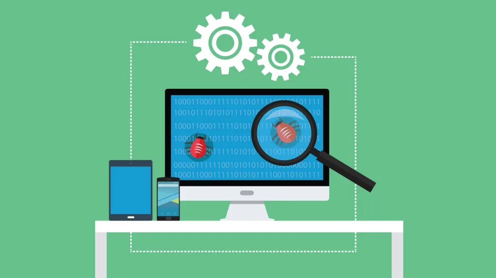

Введение
Тестирование и QA (Quality Assurance) — это важный этап в разработке программного обеспечения, цель которого — обнаружение и предотвращение ошибок, улучшение качества продукта.
Тестировщик — это специалист, который проверяет, насколько программа соответствует требованиям и насколько корректно она работает. QA-инженеры также участвуют в автоматизации тестов и построении процессов контроля качества.
История тестирования
Идеи тестирования программ появились ещё в 1950-х годах. С развитием ИТ-отрасли возникла необходимость в систематическом подходе к проверке качества.
QA стало неотъемлемой частью разработки, особенно с распространением Agile и DevOps подходов. Сегодня тестирование включает как ручные, так и автоматические методы.
- Ручное тестирование: проверка вручную по сценариям
- Автоматизация: написание скриптов для ускоренной проверки
- Интеграционное, регрессионное, нагрузочное тестирование
Виды тестирования
Существует множество видов тестирования, вот основные из них:
- Функциональное: проверка функций продукта
- Регрессионное: проверка после изменений
- Нагрузочное: поведение при больших нагрузках
- Автоматизированное: с использованием инструментов (Selenium, JUnit, Postman)
- Юзабилити: проверка удобства использования
Инструменты тестировщика
Тестировщики используют различные инструменты:
- Selenium / Cypress (автоматизация)
- Jira / TestRail (управление тест-кейсами)
- Postman (тестирование API)
- Jenkins (CI/CD)
- Chrome DevTools (отладка)
Как стать тестировщиком
Шаги к карьере в QA:
- Изучить основы тестирования и SDLC (жизненный цикл ПО)
- Освоить ручное тестирование и документацию (тест-кейсы, баг-репорты)
- Познакомиться с SQL и основами HTML/CSS
- Научиться использовать популярные инструменты
- Начать с ручного тестирования и двигаться в сторону автоматизации
Курсы по тестированию

Ручное тестирование
Научитесь писать тест-кейсы, баг-репорты и проводить ручное тестирование.
Записаться